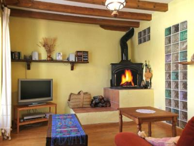

Gîtes Ruraux et Hébergements

Casa Enrique 🏔️
Santervas de la Sierra, Soria
Vivez l'expérience rurale authentique dans notre maison chaleureuse. Située en pleine nature, c'est le refuge parfait pour les familles jusqu'à 6 personnes cherchant calme et vues spectaculaires.
Voyager avec des enfants est facile ici : un environnement sûr et naturel pour jouer en toute liberté dans la province de Soria.
Dès 225€/nuit
✨ Disponibilité
La Plaza 💑
Vinuesa, Soria
Séjour inoubliable à Vinuesa, l'un des plus beaux villages d'Espagne. L'Appartement La Plaza est idéal pour les couples cherchant romance et nature.
Cet appartement central vous permet de profiter du charme historique à pied. Point de départ idéal pour explorer la Forêt de Pinares.
Offre spéciale : nous consulter
📞 Réserver
Casa Chaparrete 🔥
Deza, Soria
Le refuge parfait au cœur de la Castille. Casa Chaparrete est une maison traditionnelle idéale pour déconnecter du bruit et revenir à l'essentiel.
Profitez d'une authentique cheminée à bois, l'âme de la maison, parfaite après une journée de randonnée à Soria.
Consulter tarif
📞 Contact